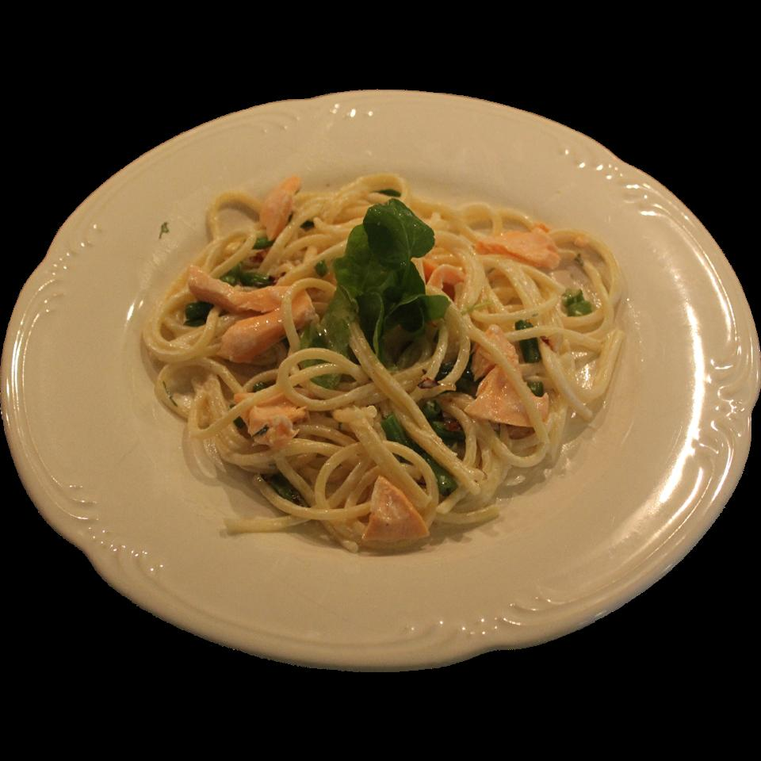

Creamy Pasta with Salmon

There was a lot of kitchen improv involved in the making of this recipe! It works as a seafood dish or a pasta
dish. It's served with a dilly sour cream sauce!
Ingredients
- 1 (8 ounce) package spaghetti
- 2 medium (blank)s lemon, juiced
- salt and ground black pepper to taste
- ½ pound salmon fillet
- 1 tablespoon olive oil
- 1 (8 ounce) package fresh green beans, trimmed and halved
- 1 large shallot, minced
- ¼ cup sour cream
- 1 bunch chopped fresh dill
- 1 cup garden cress, or more to taste
Steps
- Bring a large pot of lightly salted water to a boil. Cook spaghetti in the boiling water, stirring
occasionally, until tender yet firm to the bite, about 12 minutes. Drain.
- While pasta cooks, pour enough water into a frying pan to cover salmon; add dill. Strain in lemon juice. Mix
and season with salt and pepper. Add salmon to the pan and poach over medium-high heat, flipping as
necessary, until it flakes easily with a fork, about 10 minutes. Remove the skin when you flip it the first
time.
- At the same time, heat olive oil in a pan over medium to medium-high heat. Saute green beans and shallots
until the shallots start to brown and the green beans soften, 8 to 10 minutes.
- Once the salmon is poached, use tongs to set it aside in a shallow bowl, but don't throw the poaching
mixture away. Take about 1/4 cup of the poaching mixture and add it to a saucepan. Add sour cream and
chopped dill and mix over medium heat until combined. Remove from heat and mix into pasta.
- Place pasta on serving plates, along with some chunks of the salmon, plus some of the sauteed mixture. Try
to get an even mix if possible. Sprinkle with garden cress. Serve immediately!
Return to main page